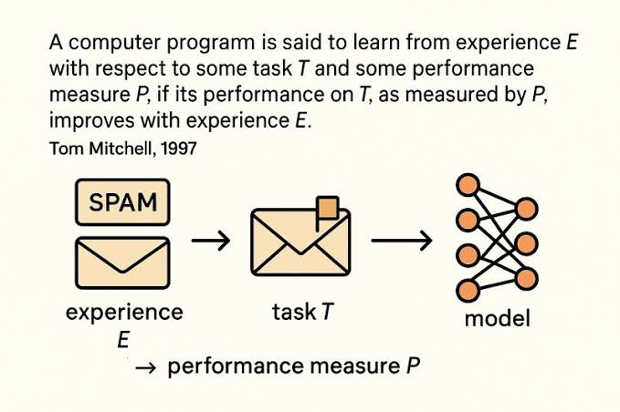
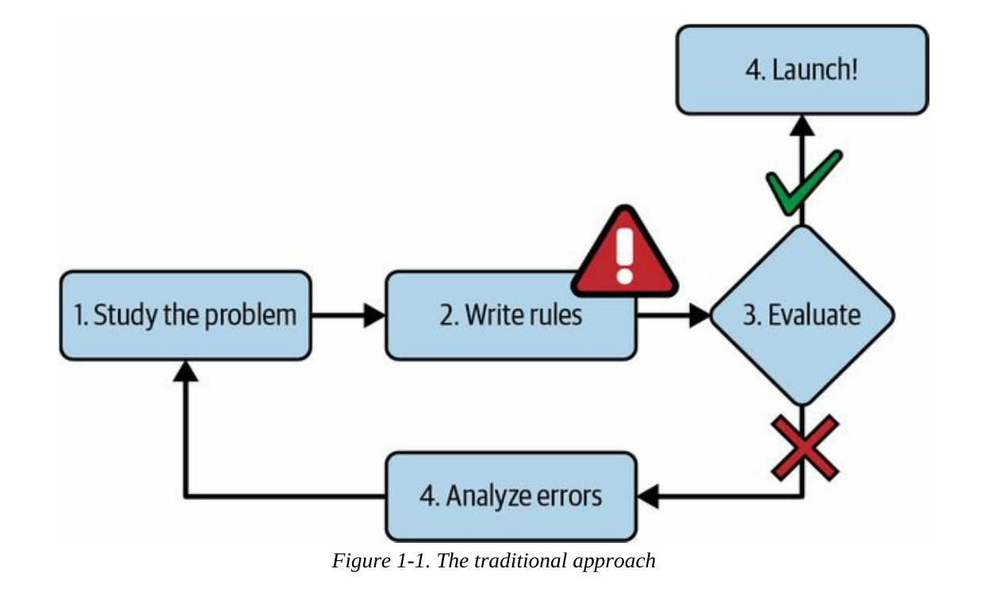
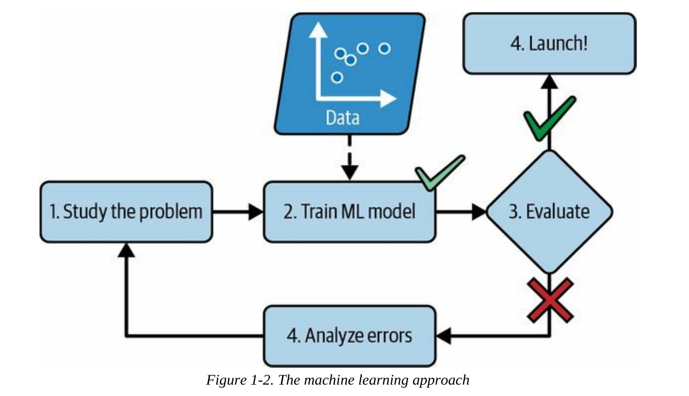
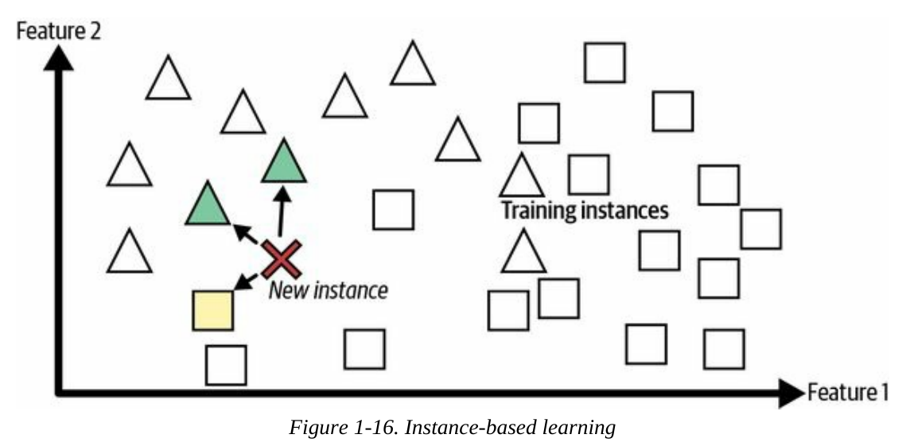
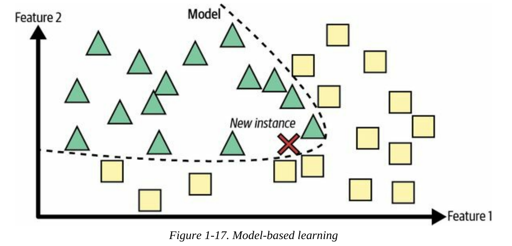

Machine Learning: Course Orientation & Chapter 1
The Machine Learning Landscape (Scikit-Learn & PyTorch)
Central Philippine University • College of Engineering
Department of Software Engineering • Second Semester AY 2026–2027
Part I: Course Orientation & Syllabus Overview
Course Identity & Class Schedule
Machine Learning (Software Engineering Specialization)
- Credit & Contact Hours: 4 Units — 6 hours/week (3 hrs Lecture + 3 hrs Laboratory)
- Course Duration: 18 Weeks (Major Exams in Weeks 6, 11, and 18 — no regular classes held)
- Core Ecosystem: Python 3.11+,
NumPy, pandas, scikit-learn, and PyTorch
Course Scope & Trajectory
From vectorized data pipelines to deep neural architectures:
- Week 2 Bootcamp: Vectorized array/tensor operations (
NumPy), tabular EDA (pandas), and applied linear algebra/calculus review.
- Weeks 3–9 (Applied Tabular ML — Géron): Leak-free
scikit-learn pipelines, custom estimators, classification metrics, gradient descent, SVMs, ensembles, and clustering.
- Weeks 10–17 (Bottom-Up Deep Learning — Raschka): Backpropagation from scratch,
PyTorch nn.Module, CNNs, RNNs/LSTMs, Transformers, GNNs, and bias/safety audits.
Primary Textbooks & Library References
- Primary Textbooks:
- Géron, A. (2025). Hands-on machine learning with Scikit-Learn and PyTorch: Concepts, tools, and techniques to build intelligent systems. O'Reilly Media. (Chapters 1–9)
- Raschka, S., Liu, Y., & Mirjalili, V. (2022). Machine learning with PyTorch and Scikit-Learn: Develop machine learning and deep learning models with Python. Packt Publishing. (Chapters 2, 11–18)
- Supplemental References (CPU Henry Luce III Library):
- Plaue, M. (2023). Data science: An introduction to statistics and machine learning. Springer. (Call #: Q 325.5 .P53 2023)
- Vaughn, P. (Ed.). (2018). Fundamentals of machine learning. Larsen & Keller. (Call #: Q 325.5 .F86 2018)
Grading System Breakdown
Your final grade combines Lecture (70%) and Laboratory (30%) components:
Lecture Component (70%)
- Prelim Examination (Wk 6): 15%
- Midterm Examination (Wk 11): 20%
- Final Examination (Wk 18): 25%
- Quizzes: 25%
- Seatwork & Problem Sets: 15%
Laboratory & Capstone (30%)
- Prelim Lab Requirement (Labs 1–3): 20%
- Midterm Lab Requirement (Labs 4–6): 30%
- Final Labs (7–10), Capstone & Defense: 50%
Evaluated via analytical lab rubrics, reproducible notebooks, and individual live oral code defenses.
Passing Mark & Grade Transmutation
The passing raw mark is 60%. Raw General Weighted Average (GWA) is transmuted using:
$$ \text{Transmuted Value} = \frac{ \text{GWA} - 60}{100 - 60} \times 25 + 75$$
| Transmuted |
Grade |
Transmuted |
Grade |
| 98 – 100 |
1.00 |
83 – 85 |
2.25 |
| 95 – 97 |
1.25 |
80 – 82 |
2.50 |
| 92 – 94 |
1.50 |
77 – 79 |
2.75 |
| 89 – 91 |
1.75 |
75 – 76 |
3.00 (Pass) |
| 86 – 88 |
2.00 |
Below 75 |
5.00 (Fail) |
Part II: Chapter 1 — The Machine Learning Landscape
Géron (2025), Chapter 1
Chapter 1 Learning Objectives
By the end of Week 1, you will be able to:
- Define Machine Learning and contrast it with traditional rule-based software engineering.
- Classify ML systems across three axes: human supervision, incremental learning, and generalization mechanism.
- Diagnose major data and algorithmic challenges: overfitting, underfitting, poor data quality, and nonrepresentative samples.
- Explain proper train / validation / test splitting and why tuning on the test set causes data leakage.
What Is Machine Learning?
- Arthur Samuel (1959): "Field of study that gives computers the ability to learn without being explicitly programmed."
- Tom Mitchell (1997) — Operational Definition: A computer program learns from experience $E$ with respect to task $T$ and performance measure $P$, if its performance at $T$, as measured by $P$, improves with experience $E$.
-

-
- Spam Filter Example:
- Task ($T$): Flagging incoming emails as spam or ham.
- Experience ($E$): Training dataset of labeled spam/ham emails.
- Performance ($P$): Ratio of correctly classified emails (accuracy / F1-score).
Traditional Software Engineering vs. Machine Learning
- Traditional Approach: Write explicit
if-else rules → evaluate → manually patch brittle rules as patterns evolve.
- Machine Learning Approach: Feed labeled data into an algorithm that automatically discovers predictive patterns.
- When ML Shines: Problems with fluctuating rules, complex perceptual signals (vision, speech), or massive datasets where humans cannot hand-craft heuristics.


Types of ML Systems: 1. Level of Supervision
- Supervised Learning: Training data includes desired outputs (labels).
- Classification: Predict discrete class labels (e.g., spam vs. ham).
- Regression: Predict continuous numeric values (e.g., housing prices).
- Unsupervised Learning: Training data is unlabeled; model discovers hidden structure (clustering, dimensionality reduction/PCA, anomaly detection).
- Self-Supervised & Semi-Supervised: Generate pseudo-labels from unlabeled data itself (e.g., masked token prediction) or mix small labeled + large unlabeled sets.
- Reinforcement Learning (RL): An agent observes an environment, takes actions, and maximizes cumulative rewards via trial and error.
Types of ML Systems: 2. Batch vs. Online Learning
- Batch (Offline) Learning:
- Model is trained on all available data at once, then deployed statically to production.
- To incorporate new data, you must retrain a fresh model from scratch—computationally expensive on large datasets.
- Online (Incremental) Learning:
- Model learns incrementally by feeding data instances sequentially or in small mini-batches.
- Ideal for streaming data, rapidly changing environments (e.g., stock prices), or out-of-core datasets exceeding RAM.
- Key Risk — Learning Rate & Data Poisoning: Too high a learning rate causes the model to forget old patterns; noisy/malicious incoming data can degrade live performance.
Types of ML Systems: 3. How They Generalize
- Instance-Based Learning: Memorizes training examples and generalizes to new instances using a similarity measure (e.g., $k$-Nearest Neighbors).
- Model-Based Learning: Builds a parameterized mathematical model of the training data to make predictions (e.g., Linear Regression: $\hat{y} = \theta_0 + \theta_1 x_1$).
- Model-Based Workflow: Select model family → define utility/cost function → run optimization to find optimal parameters $ \boldsymbol{ \theta}$ → perform inference.


Model-Based Learning in Python (Géron Ch. 1)
Training a linear regression model on GDP per capita vs. Life Satisfaction:
import numpy as np
from sklearn.linear_model import LinearRegression
# 1. Prepare training features X (2D array) and targets y (1D array)
X = np.array([[22587], [32436], [40996], [49854], [55805]]) # GDP per capita (USD)
y = np.array([5.7, 6.0, 6.5, 7.0, 7.3]) # Life satisfaction score
# 2. Select a model-based algorithm and train (fit parameters theta_0, theta_1)
model = LinearRegression()
model.fit(X, y)
# 3. Predict on an unseen country (e.g., Cyprus GDP = $37,655)
X_new = np.array([[37655]])
print(f"Predicted Life Satisfaction: {model.predict(X_new)[0]:.2f}")
print(f"Learned Parameters: intercept={model.intercept_:.3f}, slope={model.coef_[0]:.2e}")
Notice the universal scikit-learn estimator contract: instantiate → .fit(X, y) → .predict(X_new).
Main Challenges of ML: Bad Data
"Garbage in, garbage out" — even the best model fails on flawed training data:
- Insufficient Quantity of Training Data: Simple problems require thousands of examples; complex perceptual tasks (vision, NLP) often require millions unless using transfer learning.
- Nonrepresentative Training Data: Sampling bias (e.g., training only on high-income countries or convenience samples) prevents generalization to the true target population.
- Poor-Quality Data: Missing values, sensor outliers, and mislabeled records degrade learned decision boundaries.
- Irrelevant Features: Successful ML relies heavily on Feature Engineering—feature selection, feature extraction, and creating informative domain features.
Main Challenges of ML: Bad Algorithms
- Overfitting the Training Data: Model is too complex relative to data noise; memorizes training quirks and performs poorly on unseen test data.
Fixes: Simplify model, gather more data, reduce noise, apply regularization.
- Underfitting the Training Data: Model is too simple to capture underlying structure (high bias); performs poorly even on training data.
Fixes: Select a more expressive model, engineer better features, reduce regularization.
Over fitting and underfitting
Testing, Validating & Preventing Data Leakage
How do we know a model will generalize before deploying it?
- Train / Test Split (e.g., 80% / 20%): Lock the test set away until final evaluation; the error rate on new cases is called the generalization error.
- The Hyperparameter Tuning Trap: If you evaluate 100 models on the test set and pick the best one, you leak test-set information into model selection!
- Holdout Validation & Cross-Validation: Carve a validation set from the training set (or use $k$-fold cross-validation) to compare models and tune hyperparameters, touching the test set only once at the end.
- Data Mismatch: Ensure validation and test sets are as representative as possible of real production data.
Summary of Chapter 1
- Data-Driven Learning: Machine Learning replaces brittle hand-coded rules with models that optimize parameters from experience $E$ on task $T$ measured by $P$.
- Three Classification Axes: Systems differ by supervision (supervised, unsupervised, self-supervised, RL), learning mode (batch vs. online), and generalization (instance-based vs. model-based).
- Two Failure Modes: Models fail either from bad data (insufficient, nonrepresentative, noisy, poor features) or bad algorithms (overfitting vs. underfitting).
- Experimental Discipline: Always isolate a test set and use a separate validation set (or cross-validation) for hyperparameter tuning.
Week 1 Action Items & Environment Setup
Complete these ungraded tasks before next meeting (Vectorization & EDA Bootcamp):
- Environment Verification: Set up Python 3.11+ (via
venv/conda or Google Colab) with numpy, pandas, matplotlib, scikit-learn, and torch installed.
- Tooling Setup Checklist: Verify import and version output for all five core libraries in a Jupyter Notebook.